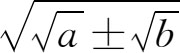

为无理数的证明。
为无理数的证明。8．第十篇：不可公度量的分类
《原本》第十篇着手对无理量（与给定量不可公度的量）进行分类。德摩根（Augustus De Morgan）用下面的话来描述这一篇的总内容：“欧几里得考察了可能表为［今日代数里的］

的所有线段，a与b则为两有理线段。”当然并不是所有无理量都能这样表示的，所以欧几里得只涉及了在他的几何代数法里所出现的无理量。第十篇的第一个命题对《原本》其后几篇的讲解是重要的。
命题1．对于两个不相等的量，若从较大量减去一个比它的一半还要大的量，再从所余量减去大于其半的量，并继续重复执行这一步骤，就能使所余的一个量小于原来那个较小的量。
欧几里得在证明的末了说，若定理中所减去的是一半的量，这也能证明。他的证明里有一步用了一个没有被他自觉意识到的公理：在两个不等的量中，较小者可自己相加有限倍而使其和超过较大者。欧几里得把有问题的这一步建立在两个量之比的定义上（第五篇定义4）。但此定义并不足以说明这一步是对的。这定义说当两个量之中的任一量自身相加足够多次后便能超过另一量，则此两量有一个比；因此欧几里得应该证明这一点对他所说的量是可以做到的。但他却假定他的量可以相比，并利用了较小量自身相加足够多次后可以超过较大量的事实。据阿基米德所说，欧多克索斯是用过这个公理（严格地说是其等价说法）的，他是把它作为一个引理建立起来的。阿基米德用了这一引理而未加证明，所以他实际上也是把它作为公理来用的。现今把这称为阿基米德-欧多克索斯公理。
第十篇共115个命题，但有些版本有116个或117个命题。后者给出了第3章所述关于为无理数的证明。